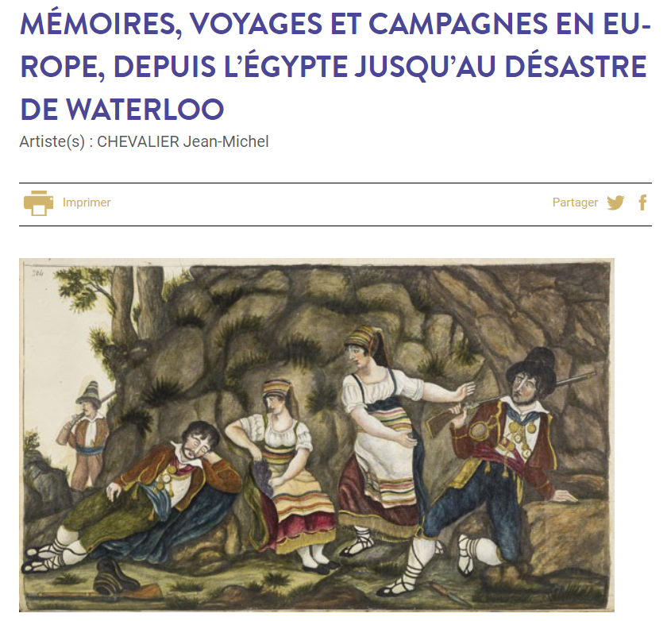
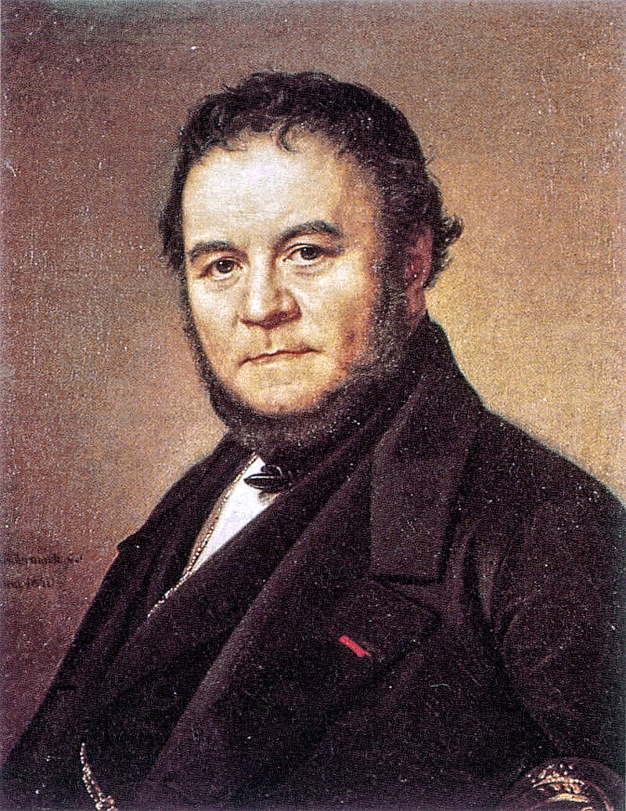
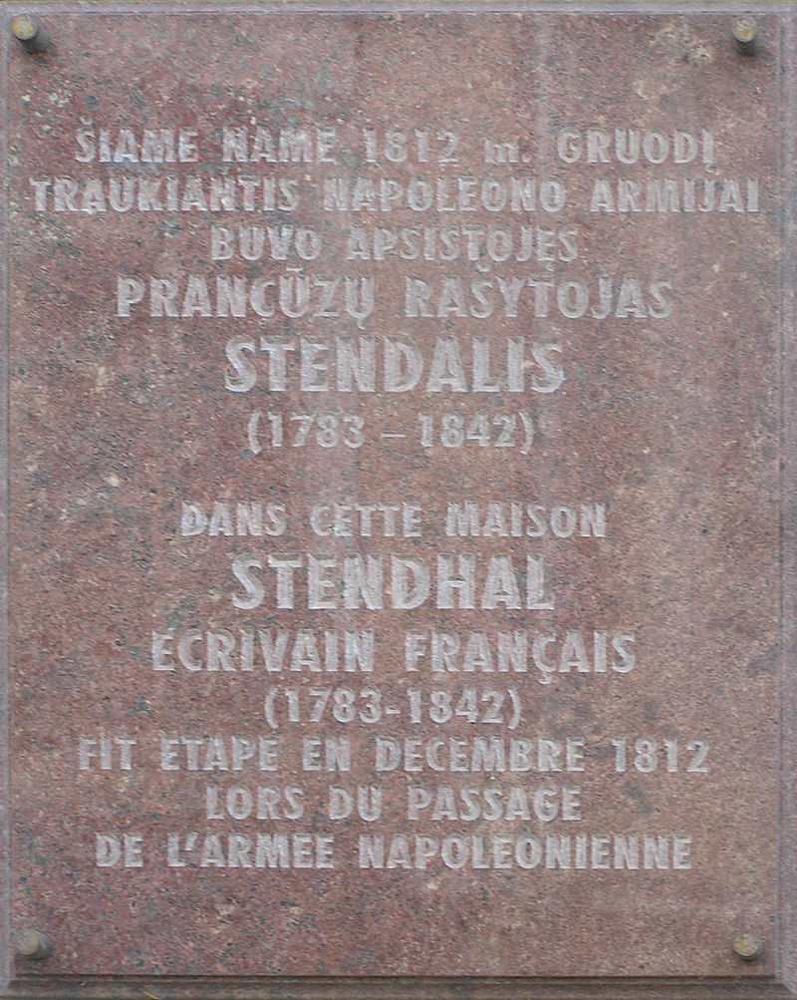
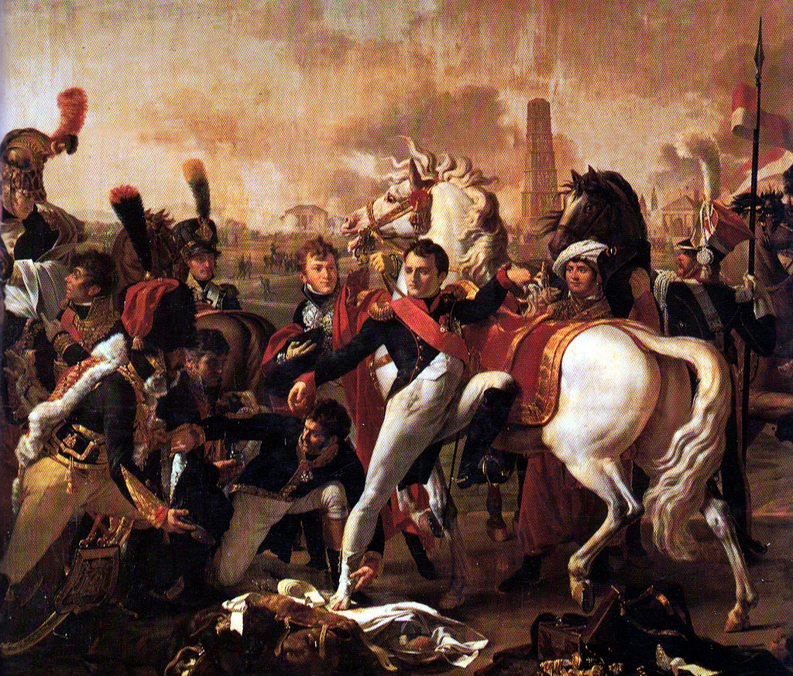
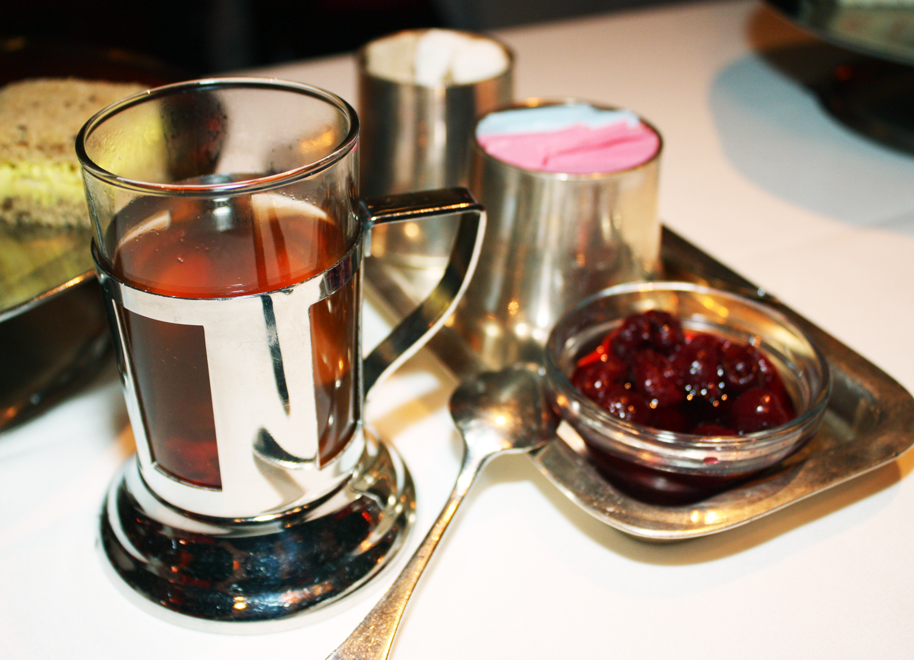

모스크바에서의 생활 (1) - 커피와 훈제 생선과 과일 잼과 메밀죽
게시: 2021-03-08T06:30:28+09:00
프랑스 남부 그레노블(Grenoble) 출신인 앙리 벨(Marie-Henri Beyle)이라는 청년은 1812년 당시 29세의 청년이었는데, 그는 2년 전부터 국가 감사관으로 임명되면서 공무원 생활을 시작했습니다. 나폴레옹 제국의 팽창이라는 시대에 맞게 그는 프랑스 국내 뿐만 아니라 이탈리아에서도 행정 업무를 수행했고 독일 지방의 여행도 많이 했습니다. 당시 이런 젊은이들이 새로운 기회를 찾아 나폴레옹의 러시아 원정에 참여하는 것은 흔한 일이었습니다. 앙리도 병참 보급관(commissaire)이라는 민간인 신분으로 이 거대한 원정대의 일원이 되었습니다. 앙리는 모스크바 대화재 당시 시외에 배치되어 있었고 따라서 성벽 밖에서 그 참혹한 장관을 지켜보았습니다. 홀라당 불타버린 모스크바 시내의 상황을 정리하고 어떻게든 병사들과 잔여 모스크바 시민들을 먹이고 재우는 것은 황제 나폴레옹과 병참 보급관 앙리의 공통된 숙제이자 골칫거리였습니다. 실은 국적과 신분에 상관없이, 모스크바 시내에 살아있는 모든 사람들의 공통된 숙제였습니다. 대화재와 그 속에서 벌어졌던 약탈과 파괴, 살인 강간 등은 빠른 속도로 줄어들었습니다. 그러나 불에 타버리고 주민들이 떠난 구역은 여전히 치안이 위험한 곳으로 남았습니다. 창고에 식량이 남아 있다고 해도 사람이 밀가루만 먹고 살 수는 없었으므로 나폴레옹은 인근 농촌 주민들이 전쟁 전처럼 모스크바 시내로 들어와 농산물을 팔도록 권장했습니다. 그러나 그런 꾀임에 넘어와 상품을 싣고 시내에 들어온 농민들 중 상당수는 프랑스 병사들에게 두들겨 맞고 약탈을 당했습니다. 확실히 나폴레옹 제국의 효율적인 행정 기구는 러시아 원정에서는 제대로 작동하지 않았습니다. 러시아에서 나폴레옹의 행정력이 삐걱거렸다는 것은 꼭 프랑스군에게만 나쁜 것은 아니었습니다. 모스크바 주민들에게는 프랑스군의 약탈과 폭행도 꽤 위협적이었지만 그보다는 시내 곳곳에 존재하는 러시아인 불량배들이 더 큰 위험이었습니다. 주민들은 앞다투어 프랑스군 고위 장교를 자기 집에 묵게 했습니다. 그것이 그 집의 안전을 보장하는 가장 좋은 방법이었기 때문이었습니다. 프랑스군 고위 장교들은 주로 큰 저택에 머물렀는데, 대개 그 집 주인인 러시아 귀족들은 피난을 떠난 뒤라서 남은 것은 그 집의 하인들이었습니다. 그런 여성 하인들 중 하나의 회고에 따르면 프랑스 장교가 그 집에 묵고 있을 때는 아무 일 없이 평화로왔는데, 그 장교가 떠나자마자 러시아인들이 몰려들어 그 집을 샅샅이 약탈했다고 합니다. 꼭 자기 집이 아니더라도 이웃에 프랑스 장교가 사는 것만으로도 큰 도움이 되었습니다. 어떤 모스크바 시민은 집 주변에 러시아 불량배들이 몰려들자 인근에 사는 프랑스군 장군의 거처로 하인을 보내 도움을 요청했는데, 순식간에 무장 순찰대가 출동하여 불량배들을 모조리 체포해갔다고 합니다. 많은 경우, 러시아의 신사계급 사람들은 프랑스군 병사보다는 러시아 서민들을 더 두려워 했습니다. 사람 사는 곳은 다 똑같다고, 그랑다르메의 다국적군 병사들과 모스크바 시민들 간에는 꼭 수탈과 폭행만 있었던 것은 아니었습니다. 당시 근위 엽기병(chasseurs à cheval) 연대에서 복무하던 슈발리에(Jean Michel Chevalier)라는 병사의 기록에 따르면 병사들은 자기가 묵는 집의 가족들은 존중하고 보호했을 뿐만 아니라, 자기들이 구해온 먹을 것을 종종 함께 나누어 먹었습니다. 나폴레옹의 의붓아들 외젠의 휘하에 있던 종군 화가 아담(Albrecht Adam)도 어떤 러시아인과 함께 살았는데, 이 둘은 함께 먹을 것을 구하고 함께 매일매일의 어려운 일상을 꾸려 나갔습니다. 어떤 이탈리아 병사들은 집주인들과 너무 사이가 좋아서 이들이 후퇴할 때는 집주인과 병사들이 함께 눈물을 흘리며 이별을 슬퍼했습니다.

(장 미쉘 슈발리에는 15세의 나이로 대포 공장에 노동자로 취업한 이후 결국 군에 입대하여 이집트부터 러시아, 결국 워털루까지 따라다닌 군인이었습니다. 그의 수기는 너무나 많은 곳을 너무나 자세히 묘사하고 있어서 이게 정말 MSG가 첨가되지 않은 진짜 본인 경험담이 다 맞는지 의심을 받기도 합니다.) 비록 허리에 장교처럼 군도를 차기는 했지만 사실 신분은 민간인이었던 병참 보급관 앙리 벨은 원래부터 폭력과는 거리가 먼 사람이었는데도, 어떤 프랑스 병사가 술에 취해 러시아 주민 하나에게 행패를 부리자 실제로 칼을 뽑아들고 그 주민을 구출하기도 했습니다. 나중에 앙리는 필명(nom de plume)을 바꾸어가며 이런저런 책을 냈는데, 1817년부터는 "M. de Stendhal, officier de cavalerie" (기병장교 므슈 스탕달)이라는 필명을 쓰기 시작했습니다. 누가 봐도 밀가루 몇 포대 쇠고기 몇 파운드 등을 다루는 병참 보급관보다는 화려한 군복을 입은 기병대 장교가 더 멋있어 보였으니 이는 비난할 일은 아닙니다.

(앙리 벨, 즉 스탕달의 1840년대의 모습입니다. Olof Johan Sodermark의 작품입니다. 스탕달은 베레지나의 참극이 벌어지기 전에 공병대의 다리가 아닌 근처 여울목을 통해 먼저 강을 건넜고, 원정대의 비참한 최후에 대해서는 알지 못한 채로 귀국했습니다. 그는 그 혹한기에서의 후툇길에서도 매일 찬물로 면도를 했다고 합니다.)

(1812년 12월, 후퇴 도중 스탕달이 머물렀다는 리투아니아 수도 빌니우스의 어떤 오래된 집에 붙은 기념패입니다.) 모스크바 및 그 주변에 주둔한 그랑다르메 병사들의 상태는 전반적으로 나쁘지는 않았습니다. 폴란드인들에게는 물론이고, 파리에 대해 무척이나 자랑스러워하던 프랑스인들에게도 모스크바는 경탄의 대상이었습니다. 모스크바 귀족들이 버리고 간 궁전과 저택은 유럽 최고급 살롱을 뺨치는 스타일을 자랑했으며, 그랑다르메의 수석 외과의였던 장 라리(Jean Larrey)는 모스크바 시내의 병원 건물들을 둘러보고 '의심할 여지 없이 유럽 최고의 수준이라고 극찬했습니다. 귀족들은 피난을 떠났지만 이런 건물들을 유지해주던 하인들과 일꾼들은 상당수가 남아있었으므로, 이런 건물들에 거처를 정한 프랑스 장교들은 무척 편안하게 지낼 수 있었습니다. 근위 경기병대(Chevau-légers) 소속이던 폴란드 출신의 장교 슈아포프스키(Dezydery Chłapowski)는 로바노프(Lobanov) 대공의 궁전에 거처를 정했는데, 그의 기록에 따르면 모든 것이 질서정연했고 그 궁전을 관리하던 하인들과 장인, 농민들에게는 프랑스군이 일종의 고용승계를 해서 예전과 같은 일거리를 주었으므로 주민들과의 관계도 무척 좋았다고 합니다.

(나폴레옹이 발에 부상을 입었던 1809년 레겐스부르크(Regensburg, 영어 및 프랑스어로는 Ratisbon) 전투에서의 슈아포프스키입니다. 맨 오른쪽에 기병창을 들고 선 폴란드 군복을 입은 사람이 슈아포프스키입니다. 그는 1813년 드레스덴 전투 이후 나폴레옹이 러시아에게 바르샤바 공국을 넘겨주는 조건으로 화평을 제안했다는 것에 분노하여 전역을 신청했는데, 나폴레옹은 적반하장으로 그걸 적전 도주라고 여겼습니다. 나폴레옹 몰락 이후로도 그는 이제 프로이센 영토가 된 고향 땅에서 폴란드의 독립을 위해 일어난 1830~31년의 11월 봉기에도 참전했다가 투옥되는 등 조국을 위해 싸웠습니다. 그는 독립은 보지 못했지만 폴란드 동포들은 물론 프로이센 사회에서도 존경을 받으며 천수를 누리고 91세의 나이로 죽었습니다.) 보로디노 전투에서 라에프스키 보루를 공격하다 부상을 입었던 모랑(Morand) 장군은 '사랑하는 에밀리'(Emilie adorée, 1808년에 결혼했던 폴란드 귀족녀 Emilia Lucja Parys)에게 보낸 편지에서 자신의 사단은 큰 건물에서 편안하게 지내고 있으며, 식량이 풍족할 뿐만 아니라 와인도 충분히 있다고 전했습니다. 콩팡(Jean Dominique Compans) 장군의 사단 재무담당관(paymaster, caissier)이었던 뒤베르제(B.T. Duverger)라는 사람은 모스크바 시내의 어떤 독일 상인이 버리고 간 주택에 자리를 잡았는데, 아래와 같은 기록을 남겼습니다. "내 거처에는 털가죽과 그림이 아주 많다. 내게는 무화과와 커피, 증류주(아마도 보드카인 듯), 마카롱과 훈제 생선 및 훈제 고기가 넘쳐난다. 다만 흰빵과 신선한 육류, 그리고 평범한 와인이 없는 것이 아쉽다." 뒤베르제 일행처럼 마카롱과 훈제 생선이 넘쳐나지만 흰빵과 신선육이 부족했던 일행이 있었는가 하면, 오도아르(Fantin des Odoards) 대위의 부대에서는 무화과와 커피는 없을지라도 흰빵과 신선육이 풍부했습니다. 후방에서 몰고오던 가축떼가 도착했기 때문에 신선한 고기가 풍부했고, 러시아인들이 지하 창고에 숨겨두었던 밀가루를 대량으로 찾아낸 덕분에 전에 제빵사였던 병사들이 흰빵을 풍족하게 구워냈기 때문이었습니다. 오도아르 대위에 따르면 로스톱친의 방화에도 불구하고 프랑스군은 필요한 모든 것을 가지고 있었습니다. 위에서 언급한 뒤베르제는 그 독일인의 저택에서 동료 11명과 함께 살았는데, 이들은 흰빵과 와인은 없지만 비교적 잘 차린 식탁에서 함께 보드카 축배를 들며 내년에는 새로운 원정이 시작되어 상트 페체르부르그에 입성하기를 기원했습니다. 또 모스크바 안팎의 주택에 딸린 많은 텃밭에는 주로 양배추가 자라고 있었는데, 마침 수확기가 된 이 많은 양의 양배추로 프랑스 병사들은 겨우내 먹을 독일식 배추절임 사우어크라우트(sauerkraut)를 만들기도 했습니다. 이렇게 보면 겨우내 모스크바에서 편히 지내다 내년 봄이 되면 다시 작전을 시작하는 것에는 아무런 문제가 없어 보였습니다. 그러나 좁은 모스크바 주변 지역에서조차 이렇게 식량의 고른 분배가 이루어지지 않고 있다는 사실은 결코 좋은 소식이 아니었습니다. 모스크바 대화재 때 나폴레옹이 잠깐 몽진을 떠났던 모스크바 바로 외곽인 페트로프스코예(Petrovskoye)에 주둔한 외젠의 군단조차도 일부 품목은 넘쳐났지만 정작 빵이 부족했습니다. 이들은 러시아 귀족들이 버리고 간 주택에서 끌어낸 화려한 가구를 땔감으로 만든 모닥불 주변에 앉아 화려한 크리스탈 술잔으로 온갖 종류의 보드카와 와인을 마셨고 홍차와 과일잼, 설탕 과자를 즐겼을 뿐만 아니라 은접시로 식사를 했지만 정작 먹는 주식은 메밀죽이었습니다. 그들에게는 빵도 고기도 없었습니다. 외젠의 한 참모 장교는 이렇게 푸념했습니다. "우리의 실질적인 가난함은 눈 앞의 화려함에 가려져 있다."

(러시아는 세계 5위의 차 소비대국입니다. 러시아식 홍차 전통의 특징은 과일잼과 함께 서빙된다는 것인데 보통은 홍차에 직접 잼을 넣어 마시지만, 그렇게 홍차에 넣지는 않아도 보통 잼을 꼭 함께 낸다고 합니다. 요즘은 잼 대신에 오X온 초코파이를 함께 낸다고도 들었습니다만 어떤지 모르겠네요.)
전성기의 나폴레옹 군단에서는 있을 수 없는 일이었습니다. 모스크바를 벗어난 지역, 즉 스몰렌스크나 바로 남쪽 100km 지역에서 쿠투조프의 야전군과 대치하고 있는 뮈라의 부대는 극심한 식량난에 시달리고 있었습니다. 베스트팔렌 병사들로 구성된 쥐노(Junot)의 제8 군단은 당시 보로디노 인근인 모즈하이스크(Mozhaisk)에 주둔하고 있었는데, 부대 전체가 굶다 못해 결국 일부 병사들이 모스크바로 가서 식량을 사려고 했습니다. 이들이 기대했던 것은 모스크바 상인들에게 프랑스군이 감독하는 공정한 가격에 구매하는 것이었겠으나, 실제로 가보니 대화재 때 약탈을 해둔 병사들로부터 매우 높은 가격에 식량을 사야 했습니다. 이 모든 것은 무언가가 잘못 돌아가고 있다는 증거였습니다. 그러나 1812년 9월~10월 사이 모스크바의 프랑스 장교들과 병사들을 사로잡은 걱정거리는 식량 따위가 아니었습니다. 바로 털가죽이었습니다.
Source : 1812 Napoleon's Fatal March on Moscow by Adam Zamoyski
en.wikipedia.org/wiki/Stendhal
en.wikipedia.org/wiki/Charles_Antoine_Morand
en.wikipedia.org/wiki/Dezydery_Ch%C5%82apowski
thedailytea.com/taste/from-russia-with-love-tapping-to-eastern-european-tea-traditions/